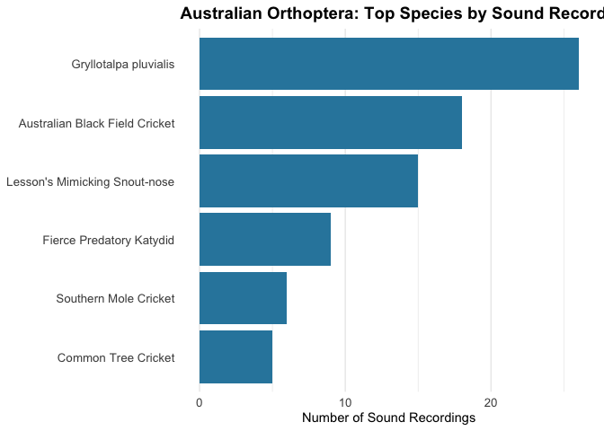

Utilities for downloading and analyzing ecoacoustic data from iNaturalist and the Atlas of Living Australia (ALA).
Installation
You can install the development version of EcoacousticUtilities from GitHub:
# install.packages("devtools")
# devtools::install_github("wcornwell/ecoacoustic_utilities")Functions
iNaturalist Functions
-
get_inat_sounds()- Download sound recordings from iNaturalist- Use case: Download actual audio files for a specific taxon
- With
download=FALSE: Get quick count of total observations with sounds - With
download=TRUE: Download up to N audio files to local directory
-
get_inat_images()- Download images from iNaturalist- Use case: Download observation photos for a specific taxon
- With
download=FALSE: Get quick count of total observations with photos - With
download=TRUE: Download up to N images to local directory - Supports
image_size: “original” (default, up to 2048px), “large”, “medium”, or “small” - Metadata includes observed taxon, date, latitude, and longitude
-
get_inat_species_summary()- Get species-level summary of sound recordings- Use case: Identify which species have the most recordings in a taxon/region
- Returns data.frame with counts per species (taxon_id, scientific_name, common_name, n_recordings)
- Useful for finding well-documented species before downloading
-
plot_inat_species_summary()- Visualize species summary data- Use case: Create publication-ready plots of species recording counts
- Horizontal bar chart with customizable colors and labels
ALA Functions
-
get_ala_sounds()- Download sound recordings from the Atlas of Living Australia (ALA)- Use case: Download high-quality research recordings from ALA nodes
- Automatically handles various metadata formats and unique file naming
- Efficiently limits searches to avoid API timeouts
-
get_ala_circle_occurrences()- Download occurrence records within a circular area
Utility Functions
-
biggest_files()- Find the largest files in a directory -
find_duplicate_wavs()- Detect duplicate WAV files by content hash -
training_dataset_summary()- Comprehensive analysis of audio training datasets
Example Usage
library(EcoacousticUtilities)
# Find largest files in a directory
big_files <- biggest_files("/path/to/directory", n = 20)
# Find duplicate WAV files
duplicates <- find_duplicate_wavs("/path/to/audio/library")iNaturalist Workflow
# 1. Quick check: How many sound recordings exist?
n_sounds <- get_inat_sounds(
"Turnix maculosus",
place_name = "Australia",
download = FALSE # Just get the count
)
print(n_sounds) # e.g., 450
# 2. Which species have the most recordings?
species_summary <- get_inat_species_summary(
taxon_name = "Orthoptera", # All crickets/grasshoppers
place_name = "Australia",
min_recordings = 5 # Only species with 5+ recordings
)
print(species_summary)
# 3. Visualize the results
plot_inat_species_summary(species_summary, top_n = 15)
# 4. Download actual audio files for a specific species
get_inat_sounds(
"Turnix maculosus",
place_name = "Australia",
target_n = 100,
download = TRUE, # Download files
quality = "research"
)Downloading Images from iNaturalist
# 1. Quick check: How many observation photos exist?
n_photos <- get_inat_images(
"Cacatua galerita",
place_name = "Australia",
download = FALSE # Just get the count
)
print(n_photos)
# 2. Download original-size images (default)
get_inat_images(
"Cacatua galerita",
place_name = "Australia",
target_n = 50,
download = TRUE,
quality = "research"
)
# Files saved to images/images/, metadata in images/metadata.csv
# Metadata includes: observed taxon name, date, lat, long, license, etc.
# 3. Download medium-sized images globally (no place filter)
get_inat_images(
"Danaus plexippus",
use_place_filter = FALSE,
target_n = 100,
image_size = "medium" # Smaller files (~500px)
)Example: Australian Orthoptera
Here’s a real example analyzing cricket and grasshopper recordings in Australia:
library(EcoacousticUtilities)
#> galah: version 2.1.2
#> ℹ Default node set to ALA (ala.org.au).
#> ℹ See all supported GBIF nodes with `show_all(atlases)`.
#> ℹ To change nodes, use e.g. `galah_config(atlas = "GBIF")`.
library(ggplot2)
# Get species with at least 5 recordings
orth_summary <- get_inat_species_summary(
taxon_name = "Orthoptera",
place_name = "Australia",
min_recordings = 5
)
#> Processing page 1 (160 observations)
#> No more results at page 2.
# View top species
head(orth_summary, 10)
#> taxon_id scientific_name common_name n_recordings
#> 2 623017 Gryllotalpa pluvialis <NA> 26
#> 8 397920 Teleogryllus commodus Australian Black Field Cricket 18
#> 4 701931 Pseudorhynchus lessonii Lesson's Mimicking Snout-nose 15
#> 12 894013 Hexacentrus mundurra Fierce Predatory Katydid 9
#> 6 569917 Gryllotalpa australis Southern Mole Cricket 6
#> 7 633763 Oecanthus angustus Common Tree Cricket 5
# Create visualization
plot_inat_species_summary(
orth_summary,
top_n = 15,
title = "Australian Orthoptera: Top Species by Sound Recordings"
)
ALA Workflow
# Configure ALA email (required for galah)
library(galah)
galah_config(email = "your.email@example.com")
# 1. Download sounds for a specific species
get_ala_sounds(
"Notaden bennettii",
target_n = 10,
supplier = "CSIRO", # Optional: filter for CSIRO/ANWC records
include_taxon_name = TRUE
)
# 2. Get ALA occurrences within a radius
birds <- get_ala_circle_occurrences(
taxon = "Aves",
lat = -33.7,
lon = 151.3,
radius_km = 10,
email = "your.email@example.com"
)Training Dataset Analysis
# Analyze an audio training dataset
summary <- training_dataset_summary("/path/to/audio/dataset")
print(summary) # Shows class distribution, file types, sizes, durations, outliers